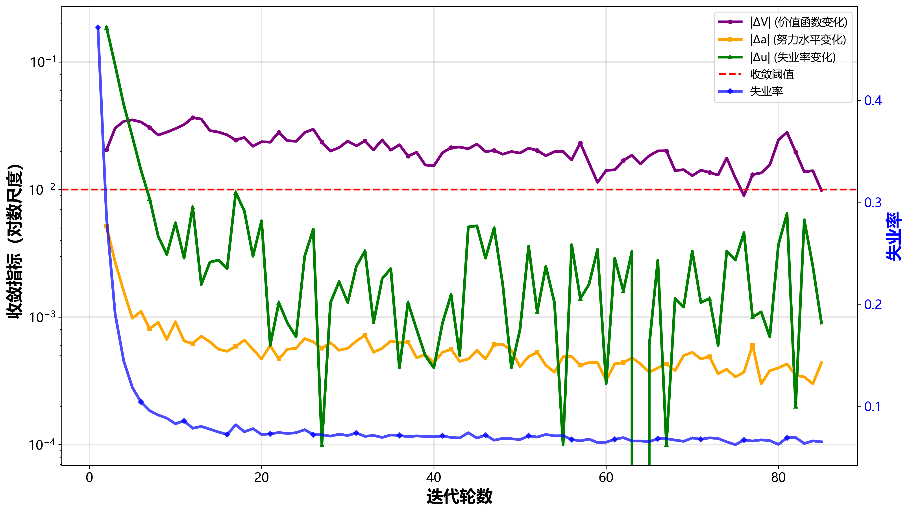
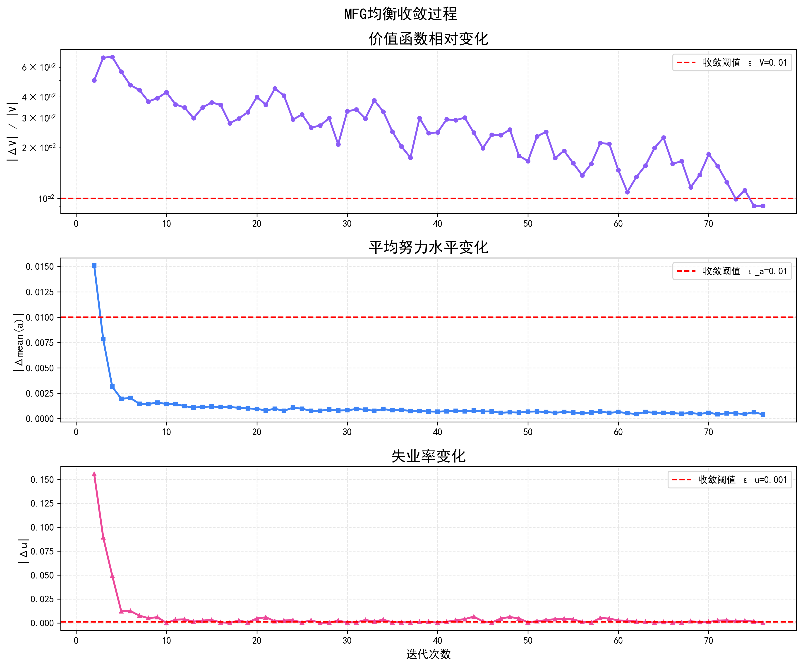
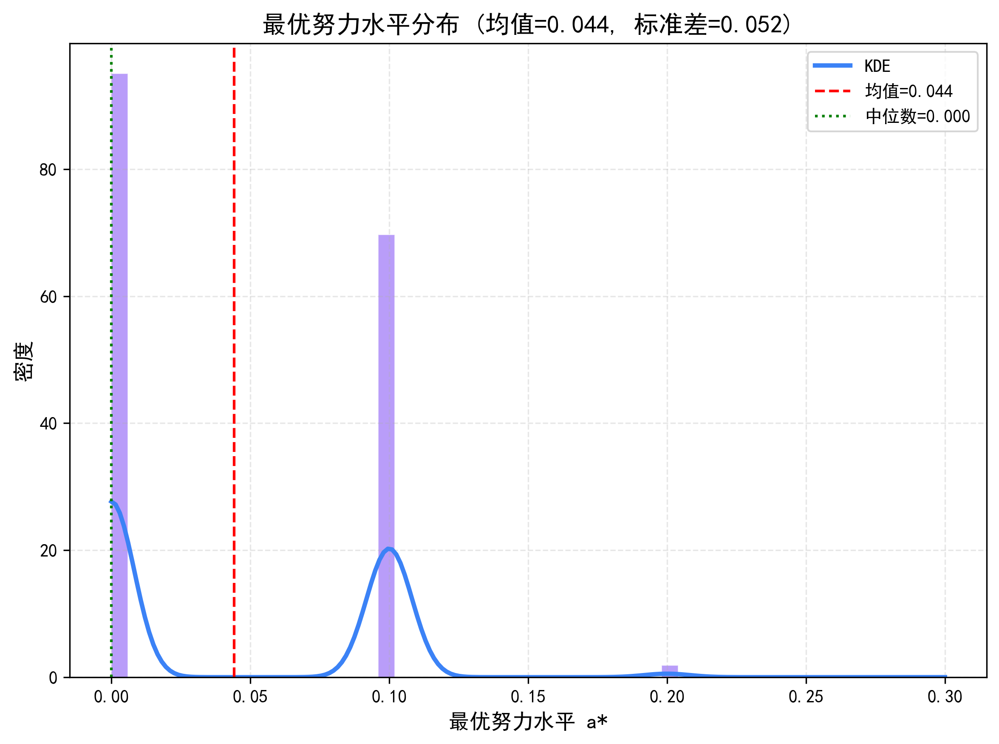
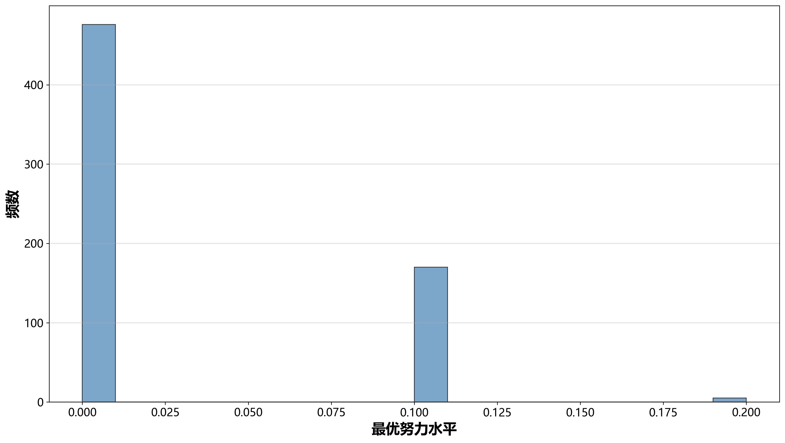
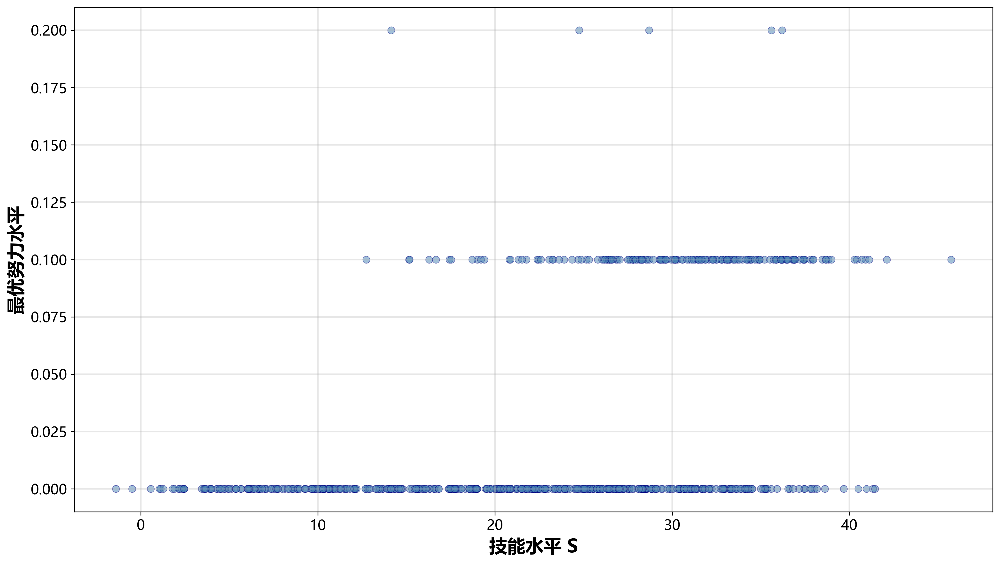
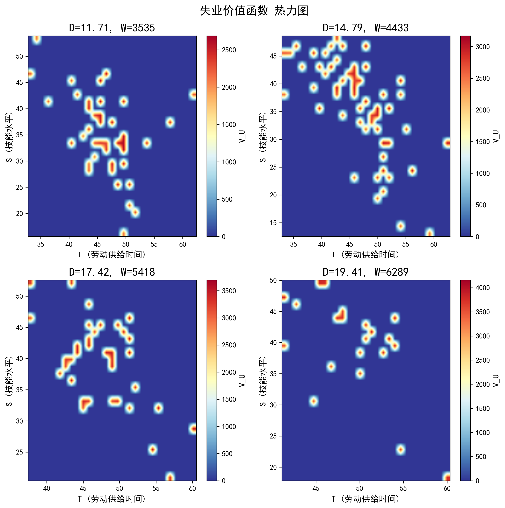
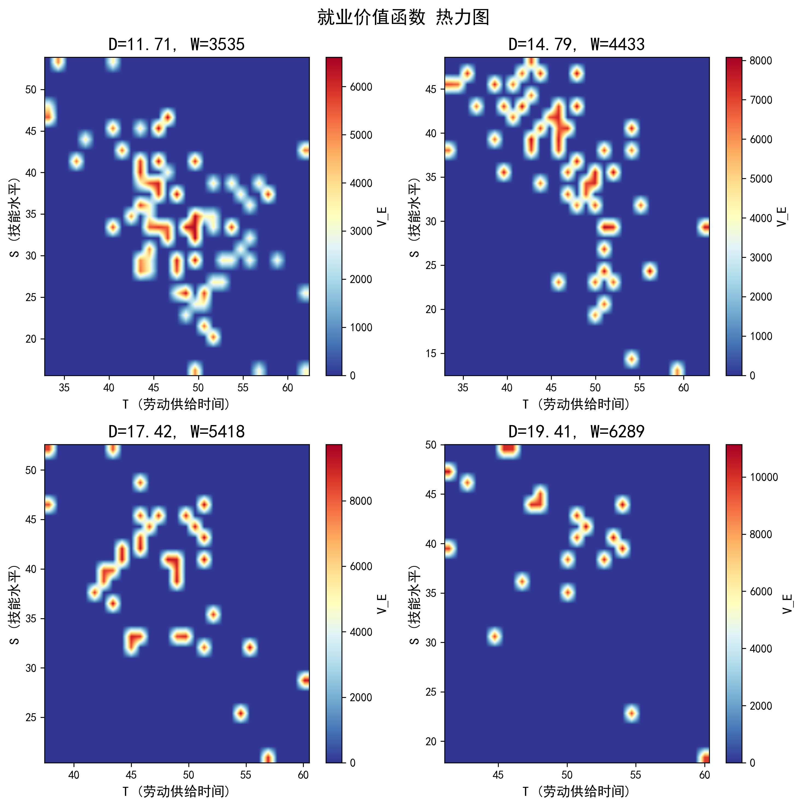
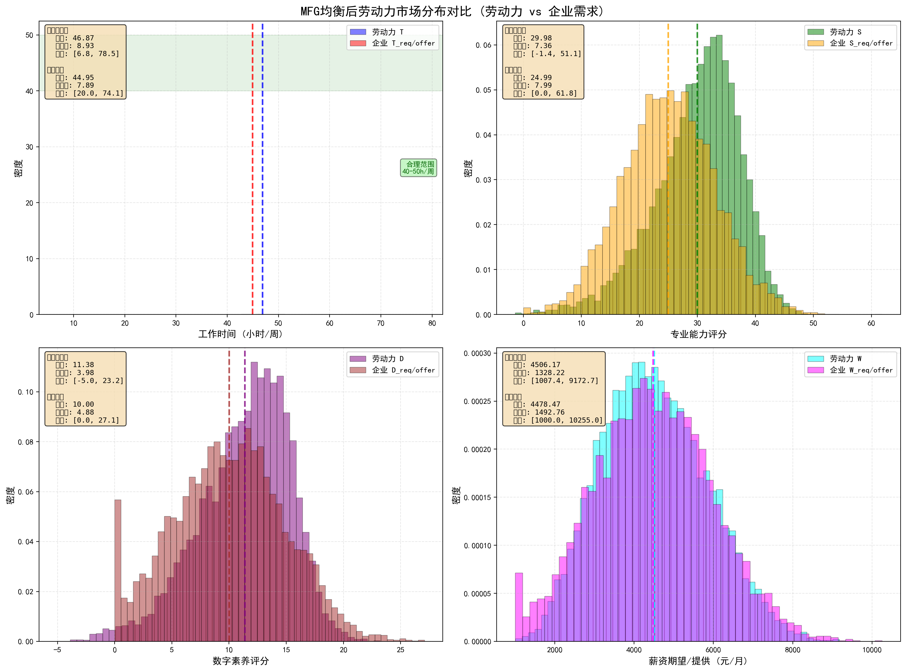

基于平均场博弈理论，构建大规模异质性个体动态博弈均衡模型， 刻画劳动者的最优努力策略和就业市场的长期稳态分布。 采用Bellman方程求解个体最优策略，通过Monte Carlo仿真演化人口分布。
平均场博弈（MFG）： 一种分析大规模主体交互系统的理论框架，由Lasry-Lions (2006)和Huang-Caines-Malhamé (2006)独立提出。 核心思想是用平均场分布代替所有其他个体的影响，将多主体博弈简化为单个代表性主体对平均场的优化问题。
求解策略： 采用不动点迭代法求解MFG均衡，交替求解Bellman方程（个体最优策略）和 Kolmogorov Forward方程（人口分布演化），直至收敛。
适用场景： 大规模异质性劳动力市场、交通流量、能源市场、金融市场等需要刻画大量主体交互的复杂系统。
本研究基于平均场博弈框架求解了包含10,000个异质性个体的劳动力市场均衡。 实验结果显示，在市场紧张度θ=1.5的条件下，系统经过85轮迭代成功收敛至稳态均衡， 最终失业率稳定在6.49%，接近自然失业率水平。
| 指标 | 初始值 | 最终值 | 变化 |
|---|---|---|---|
| 失业率 | 47.14% | 6.49% | -40.65pp |
| 平均T | 42.74h/周 | 46.65h/周 | +3.91h |
| 平均S | 25.66 | 29.78 | +4.12 |
| 平均D | 9.04 | 11.27 | +2.23 |
表1：MFG均衡前后的关键指标对比
| 变量 | 就业者(9349人) | 失业者(651人) | 差距 |
|---|---|---|---|
| T | 47.27h | 37.70h | +25.4% |
| S | 30.25 | 23.04 | +31.3% |
| D | 11.49 | 8.14 | +41.2% |
| W | 4569元 | 3598元 | +27.0% |
表2：均衡时就业者与失业者的状态变量差异

图1：三大收敛指标（|ΔV|、|Δa|、|Δu|）与失业率的双轴演化图

综合收敛曲线

最优努力分布
图2-3：失业率和努力水平随迭代轮次的变化趋势

努力水平直方图

技能水平与最优努力的关系
图4-5：最优努力水平分布与技能-努力关系散点图
关键观察： 均衡时超过50%的失业者选择零努力（中位数为0），当劳动力市场接近充分就业时，额外求职努力带来的匹配概率增量极为有限， 理性个体选择降低努力水平。此外，技能水平与最优努力呈现明显正相关，高技能劳动者(S>30)的平均努力水平显著高于低技能劳动者(S<20)。
图3：3D交互式失业价值函数（可旋转、缩放、悬停查看数值）
图4：3D交互式就业价值函数（可旋转、缩放、悬停查看数值）

VU 热力图

VE 热力图
图5-6：价值函数在T-S空间的分布（固定D和W的中位数）

图7：均衡状态下劳动者与企业需求的分布对比（供需匹配度分析）